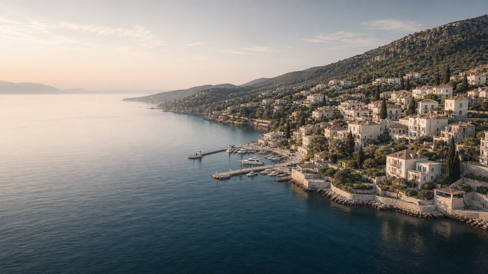

Tell us about your life
A natural conversation about how you want to live, who comes with you and what matters.
AI-guided home discovery
Describe the life you want. Fourma researches the world to find the right location—and ready homes that belong there.
No account needed · Your first research is complimentary

Strong fit for slow summers, sailing and a close-knit international community.
A different starting point
A natural conversation about how you want to live, who comes with you and what matters.
We translate your preferences into precise destinations, with honest advantages and compromises.
Current location intelligence and ready homes, backed by sources and explained for you.
Fourma can make mistakes. Important facts are checked and sourced in your research.
Live location research
Fourma is discovering and checking open-web sources against your Search Profile. This takes about 15 seconds in the prototype.
Starting research…00:15
Fourma conclusion
Hydra gives you the pace, beauty and close community you described—without requiring complete isolation. It is strongest from May through September, with a genuine year-round local core.
Location intelligence
Fourma separates sourced facts, estimates and AI synthesis. Tax and legal notes are general information, not professional advice.
Daily life centres on the harbour, walking paths, swimming coves and a compact international community. Private cars are prohibited.
Hot, dry summers with regular sea breezes. July and August are the busiest and warmest months.
Frequent summer flights to Athens, then ground transfer to Piraeus and hydrofoil. No airport on Hydra.
Scarce supply and protected architecture support values, but comparable evidence is limited and negotiation can be opaque.
EU and non-EU residents can generally purchase, subject to standard legal and source-of-funds checks.
Life in the location
Selected around your preference for the sea, active days and a local social rhythm—not a generic tourist checklist.
Day sails toward Dokos and Spetses, with protected anchorages and reliable summer winds.
Easy to make part of weekly life rather than a special excursion. Private charters and sailing clubs operate from the harbour.
Clear-water swimming at Spilia, Hydronetta and quieter coves reached by foot or water taxi.
Several coves are close enough for a daily morning swim before the harbour becomes busy.
A stone path climbs through pine forest to the monastery and panoramic island views.
Start early from June to September. The route is quieter and cooler in spring and autumn.
From simple waterfront tavernas to small seasonal restaurants behind the port.
Our research found a strong everyday dining scene, though many venues close or reduce hours in winter.
Contemporary art in a converted slaughterhouse, plus galleries around Hydra Town.
The summer programme brings an international creative community without changing the island’s scale.
Explore rocky inlets and Mandraki bay independently or with a local guide.
Early mornings are typically calmer. Guided routes adapt to wind and experience.
Longer routes connect monasteries, remote beaches and Hydra’s interior ridgelines.
Particularly good in the shoulder months when temperatures are lower and paths are quiet.
A slower neighbourhood rhythm around the small fishing harbour west of town.
It offers the close community feeling you described, away from the busiest part of Hydra port.
Best matches
Three best results from 17 available properties, ordered by relevance to your profile.
€2,450,000
4 beds · 246 m² · Sea view
€2,100,000
3 beds · 198 m² · Courtyard
€1,780,000
3 beds · 174 m² · Waterfront
Create your saved Search Profile to see every extracted property and receive new matches weekly.